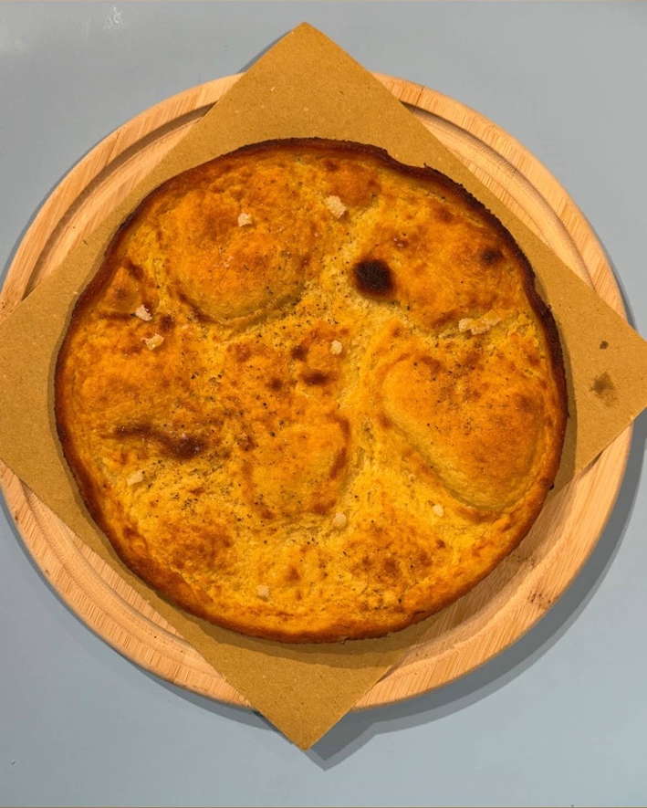
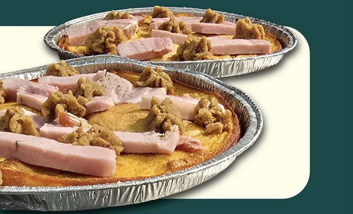

Classica
5,00 €Sale, pepe e scorza di limone.
Farinata · Torino
Farina di ceci, acqua, olio e sale. Dalla Classica alle farinate farcite: scopri il menu di Belin Che Bon, in via Bogino 5.
Via Bogino 5 · Torino centro02 / Parliamo di senza glutine

È fatta con farina di ceci, acqua, olio e sale.
La base della farinata, come indicata da Belin Che Bon:
Il locale dichiara di utilizzare ingredienti gluten free.
Nel post sul senza glutine, Belin Che Bon spiega che nel proprio forno cuoce esclusivamente la farinata.
Informazioni dichiarate dal locale. Per allergie, esigenze specifiche e ingredienti delle bevande, chiedi sempre al personale. Scheda allergeni completa [DA CONFERMARE].
03 / Delivery & asporto
Scegli la tua app e verifica consegna o ritiro per il tuo indirizzo. L’ordine si completa direttamente sulla piattaforma.
Disponibilità, costi e tempi sono quelli mostrati dall’app al momento dell’ordine.
04 / Vieni a trovarci
[DA CONFERMARE]
Consulta gli aggiornamenti sulla scheda Google Maps prima di passare.